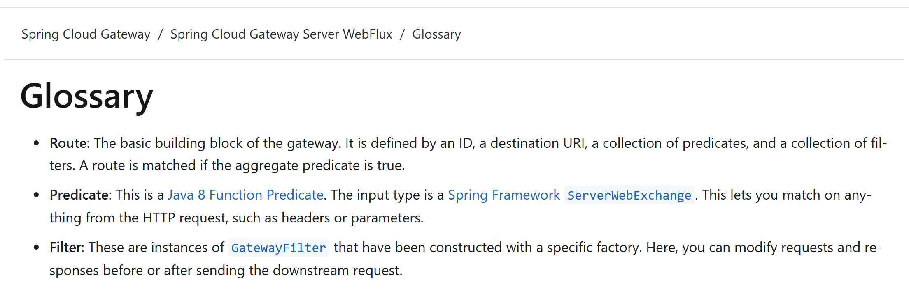
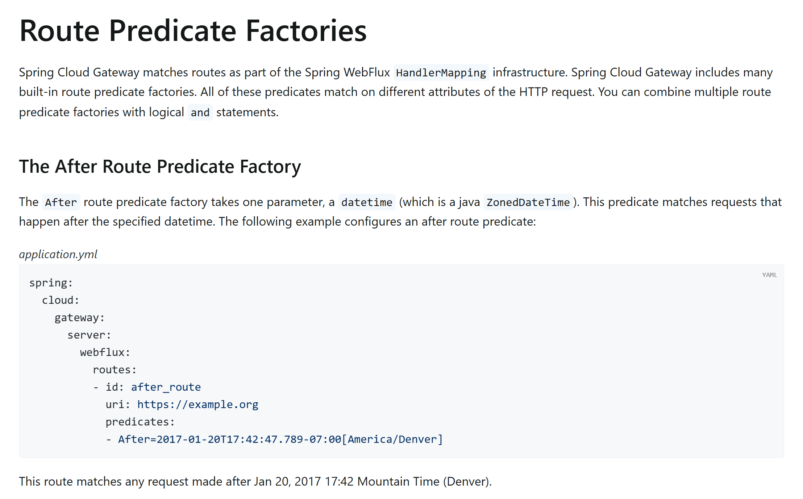
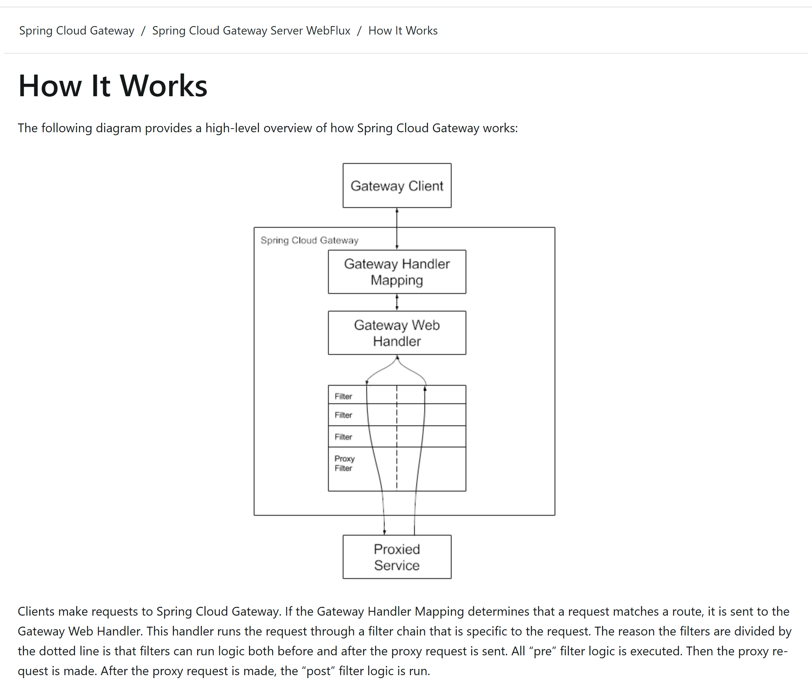

OSS PROJECT INTRO · SPRING CLOUD GATEWAY 系列第 3 期：核心概念与整体架构
上一期我们把网关跑了起来：一条路由配置下去，请求转发成功。但那条路由背后，网关里到底发生了什么？本期把黑盒拆开，带你拿走一张概念地图：Route、Predicate、Filter 三件套怎么协作出千条路由，一条请求在网关里走什么线程、过哪几个组件。概念口径全部对齐官方文档（v5.0.3），类名逐个在 v5.0.3 源码里核对。看完本期，"限流、鉴权装进网关"就不再是背配置，而是知道每一行配置落在地图的哪个位置。
第 2 期里，我们建了一个 Spring Boot 工程、引了 starter、写了一条最简单的路由——启动之后，请求从网关进来，被转发到了配置的目的地。跑通的那一刻很爽，但有个问题悬着：这条路由是谁在什么时候读的？请求命中路由之前和之后，都经过了谁？本期就回答这些。结束时你带走四样东西：
先认主角色。Route（路由）是官方口径下的"基本积木"（Glossary 原话：The basic building block of the gateway），由四要素构成：id 是这条路由的名字，uri 是转发目的地，predicates 是一组断言，filters 是一组过滤器——断言"全真"（aggregate predicate is true）这条路由才算命中。Predicate（断言）是匹配条件，本质是一个输入为 ServerWebExchange（Spring 对"请求 + 响应"上下文的封装）的 Java Predicate 函数，请求里任何东西——路径、方法、请求头、参数、Cookie、甚至时间点——都能拿来当匹配依据。Filter（过滤器）是加工环节：官方定义明确说，你可以在把请求发给下游之前或之后修改请求和响应。

官方文档 Glossary 页：Route / Predicate / Filter 三个核心词的权威定义，本节口径逐条对照（docs.spring.io，Spring Cloud Gateway Server WebFlux 5.0.3，2026-09-19 截图）。断言不是一个而是一族。官方内置的 Route Predicate Factory 按匹配维度各分一员，常用的有这些（全部可以在 yml 里用"名字=参数"的捷径写法组合，多个断言之间是逻辑与）：
| 断言工厂 | 匹配什么 | 速记例子 |
|---|---|---|
| Path | 路径模式，支持 {segment} 变量提取 | Path=/api/** |
| Method | HTTP 方法，可写多个 | Method=GET,POST |
| Header | 请求头存在且值匹配正则 | Header=X-Request-Id, \d+ |
| Query | 请求参数存在且值匹配正则 | Query=red, gree. |
| Cookie | Cookie 存在且值匹配正则 | Cookie=chocolate, ch.p |
| After / Before / Between | 时间窗：某时刻之后 / 之前 / 两时刻之间（定时开闸、维护窗口） | After=2026-01-20T00:00+08:00[Asia/Shanghai] |
| Weight | 按组权重分流（灰度切流的底座） | Weight=group1, 8 |
v5.0.3 文档里这族工厂共 14 个，还有 Host、RemoteAddr、XForwardedRemoteAddr、Version、ReadBody 等，完整清单见官方《Route Predicate Factories》一节。断言家族是"门槛"，过滤器才是"关卡"——它分两层：GatewayFilter 挂在某条路由的 filters 键下，只对命中该路由的请求生效，官方内置工厂 v5.0.3 文档列出 38 个（AddRequestHeader、RewritePath、RequestRateLimiter、CircuitBreaker、Retry……治理动作基本不用自己写）；GlobalFilter 则是"签名的签名与 GatewayFilter 相同、条件化地应用于所有路由"的特殊过滤器（官方原话：The GlobalFilter interface has the same signature as GatewayFilter. These are special filters that are conditionally applied to all routes），转发动作本身（把请求真正发往下游的 NettyRoutingFilter 就是一个 GlobalFilter）都藏在这一层。无论哪层，每个过滤器都干两段活：转发前的 pre 逻辑（改请求头、鉴权、限流、打标）和转发后的 post 逻辑（改响应头、记录指标、收集耗时）。

官方文档《Route Predicate Factories》开篇与 After 工厂样例：断言匹配构建在 Spring WebFlux HandlerMapping 基础设施之上，多个断言用逻辑与组合（docs.spring.io，v5.0.3，2026-09-19 截图）。路由本质上是一份配置对象——第 1 期说过"断言 + 过滤器组合出千条路由"，写法上官方给了两条路。配置式写在 application.yml 里，上期你已经用过：
spring:
cloud:
gateway:
server:
webflux:
routes:
- id: path_route
uri: https://example.org
predicates:
- Path=/red/{segment},/blue/{segment}编程式则声明一个 RouteLocator Bean，用 RouteLocatorBuilder 的链式 API 把断言、过滤器、目的地一路写下来（样例节选自官方《Fluent Java Routes API》）：
@Bean
public RouteLocator customRouteLocator(RouteLocatorBuilder builder) {
return builder.routes()
.route(r -> r.path("/image/png")
.filters(f -> f.addResponseHeader("X-TestHeader", "foobar"))
.uri("http://httpbin.org:80"))
.build();
}两条路底层是同一个模型：yml 走 PropertiesRouteDefinitionLocator 读进 RouteDefinition（路由定义对象），编程式直接产出 Route。这个"定义"抽象正是动态路由的钩子——官方还提供 DiscoveryClientRouteDefinitionLocator，从注册中心自动生成路由；配置中心改了配置，发一个 RefreshRoutesEvent 事件，路由缓存就刷新。路由来源可以有很多种，匹配引擎只认统一的 Locator 接口——与 Nacos 配置中心联动做动态路由，第 4 期实战展开（公司主栈 Spring Cloud Alibaba 的常见组合），Nacos 本身的入门见本系列 0001~0005 期。
三件套认识了，现在把它们放回流水线。官方文档《How it works》给了一张总图，原话只有两句："如果 Gateway Handler Mapping 判定请求匹配某条路由，请求被送给 Gateway Web Handler；这个 handler 让请求穿过一条为该请求定制的过滤器链。"过滤器之所以被虚线分成两半，官方解释是：过滤器在代理请求发出前后各有一段逻辑——先全部执行 pre，然后发出代理请求，之后执行 post。

官方文档《How it works》：Gateway Client → Gateway Handler Mapping → Gateway Web Handler → 过滤器链（虚线上 pre / 虚线下 post，Proxy Filter 负责转发）→ Proxied Service（docs.spring.io，v5.0.3，2026-09-19 截图）。把图上的方框落到类名（逐个在 v5.0.3 源码 tag 里核对过路径），一条请求的完整旅程是：请求先进 Spring WebFlux 的总调度 DispatcherHandler，它把请求交给路由专用的 Handler Mapping——RoutePredicateHandlerMapping，后者拿着全部断言逐条测试，找出命中的 Route；命中后请求交给 FilteringWebHandler（就是图里的 Gateway Web Handler），它把全局过滤器 + 该路由的路由级过滤器合并、按 order 排序，组成一条只属于这个请求的链；链上每个过滤器先跑 pre，走到链尾由 NettyRoutingFilter 用 Netty 客户端把请求真正发往下游，响应原路返回时再倒序跑一遍各过滤器的 post。
| 图上的概念 | 源码类（org.springframework.cloud.gateway 下，v5.0.3） | 一句话职责 |
|---|---|---|
| Gateway Handler Mapping | handler.RoutePredicateHandlerMapping | 拿断言测试请求，命中返回路由 |
| Gateway Web Handler | handler.FilteringWebHandler | 组装并驱动过滤器链 |
| 路由清单 | route.RouteLocator（缓存包装 route.CachingRouteLocator） | 提供 Route 集合，缓存 + 刷新 |
| 路由定义来源 | route.RouteDefinitionLocator | yml / 编程式 / 注册中心都汇成它 |
| 转发动作 | filter.NettyRoutingFilter（GlobalFilter） | 真正把请求发往下游 |
| 路由刷新 | event.RefreshRoutesEvent | 清路由缓存，动态路由生效点 |
上表所有类都活在同一套底座上：Reactor + Netty。Reactor 是 Spring 的响应式流实现（过滤器签名里的 Mono<Void> 就是它的类型）；Netty 提供通信层，核心是事件循环（Event Loop）：固定的很少几根线程，每根线程用"哪个连接就绪就处理哪个"的方式服务成千上万个连接。网关恰好是最典型的 IO 密集场景——它自己几乎不算业务，只是收请求、转请求、回响应，时间都花在等网络上。线程数与连接数解耦之后，少量线程就能扛住大量并发转发，这正是第 1 期演进故事里 SCG 替代 Zuul 1 的根本原因：Zuul 1 建在 Servlet 阻塞模型上，一个请求占住一根线程从头等到尾，线程池上限就是并发上限，转发型负载一高，线程全耗在"等下游"上。
由此得出本期最重要的红线：过滤器里不能写阻塞调用。你处在事件循环线程上，线程是全体请求共享的——
Thread.sleep 一小段，这根事件循环线程就被你按住不动了，排在它身上的其他所有请求一起陪停；几根线程很快全被按住，整个网关吞吐瞬间归零；block() 系列方法，Reactor 会直接抛 IllegalStateException（提示 block 系列是阻塞调用，在 reactor-http-nio 线程上不受支持）——这是运行时兜底，别指望它；一句话总结这层设计：阻塞式网关用"人多"解决问题，响应式网关用"不傻等"解决问题。线程不再被某个等待独占，吞吐自然上去——代价是写法上必须全程非阻塞，这就是第 4 期实战里每一段过滤器代码都要遵守的纪律。
这张图值得打印贴墙：左边进请求，右边出响应；中间三层——匹配层（Handler Mapping 找路由）、组装层（Web Handler 排链）、执行层（过滤器链 pre → 代理 → post）。第 4 期限流、鉴权、灰度每加一样东西，都只是往这张图的过滤器链上挂一个新节点；第 5 期读源码，就沿着 ①②③ 的顺序进。
架构最后落到代码才踏实。spring-cloud/spring-cloud-gateway 仓库按 tag v5.0.3 核对（目录名逐个对照根 pom 的 modules 清单），顶层是这样的：
spring-cloud-gateway @ v5.0.3
├─ spring-cloud-gateway-server-webflux/ 响应式网关本体（本期讲的类全在这）
├─ spring-cloud-gateway-server-webmvc/ Servlet 形态网关本体
├─ spring-cloud-starter-gateway-server-webflux/ 响应式形态 starter
├─ spring-cloud-starter-gateway-server-webmvc/ Servlet 形态 starter
├─ spring-cloud-gateway-proxyexchange-webflux/ ProxyExchange（WebFlux）
├─ spring-cloud-gateway-proxyexchange-webmvc/ ProxyExchange（WebMVC）
├─ spring-cloud-gateway-dependencies/ BOM 依赖清单
├─ spring-cloud-gateway-sample/ 官方示例工程
├─ spring-cloud-gateway-integration-tests/ 跨形态集成测试
└─ docs/ 官方文档源三个看点。其一，本体与 starter 分离：server-webflux / server-webmvc 两个实现模块放代码，starter 只管依赖装配——第 2 期"别拿错坐标"的答案就在这，两个 starter 对应两种运行形态。其二，ProxyExchange 是第三种用法：不接管整个应用，在普通 Spring 应用里注入 ProxyExchange 对象手工转发个别端点，轻量但覆盖面小。其三，响应式本体是主角：第 5 期源码导读的入口就在 spring-cloud-gateway-server-webflux 的 handler / route / filter 三个包——正好对应本期架构图的匹配、清单、执行三层。另注：顶层还有一个 spring-cloud-gateway-server 目录，里面只放共享的配置元数据，不在构建模块清单里，翻源码时别迷路。
图的是把"路由从哪来"和"路由怎么匹配"彻底解耦。匹配引擎（RoutePredicateHandlerMapping）只认 RouteLocator 这一层的 Route 对象，而路由从哪来，全部收编为 RouteDefinitionLocator 的实现：yml 是 PropertiesRouteDefinitionLocator，编程式 API 直接产 Route，注册中心发现是 DiscoveryClientRouteDefinitionLocator，管理端点动态下发是另一条路——CompositeRouteDefinitionLocator 把它们聚到一起，RouteDefinitionRouteLocator 再把"定义"翻译成带真断言真过滤器的 Route，最后 CachingRouteLocator 套一层缓存。新增一种路由来源（比如第 4 期接 Nacos 配置中心），只是多写一个 Locator 实现 + 在配置变更时发一个 RefreshRoutesEvent 清缓存，匹配引擎一行不改。反过来想"存数据库"方案：每接一个来源就要改一次匹配查询逻辑，路由表结构还会把"断言怎么配"焊死在表结构上——SCG 用一个接口把变化关在了门外。这是"稳定核心 + 可插拔供给"的经典分层，自己设计配置驱动的系统时直接可抄。
算一笔账就清楚了。事件循环线程是全体连接共享的：8 核机器上 Netty 事件循环默认也就 8 根线程（与 CPU 核数相关），但瞬时并发可能是几千个连接。你在 pre 过滤器里同步等 50 毫秒，这根线程上的所有其他请求陪停 50 毫秒；假设鉴权接口平均 50 毫秒，一根线程每秒最多处理 20 个请求，8 根线程的吞吐天花板就是每秒 160 次——而且这 160 次里还包括所有不需要鉴权的正常转发。更糟的是抖动：鉴权服务一旦慢到 2 秒，网关线程被成批按住 2 秒，入口吞吐瞬间归零，下游没事、网关先死，故障面反而被网关放大。对照 正确姿势：换成 WebClient 发起异步调用，发起后立刻归还线程，响应到达时再回到过滤器继续跑——同样的 8 根线程，等待期间能服务成千上万个其他请求。这正是"线程数与连接数解耦"的全部意义：响应式不是为快，是为等待期间不浪费线程。所以那条红线不是风格洁癖，是这类网关的生死线。
本期 primary source：Spring Cloud Gateway Reference · How it works（v5.0.3）；延伸阅读：网关要对接的注册与配置中心，见本系列 Nacos 系列五连讲（0001~0005 期）。